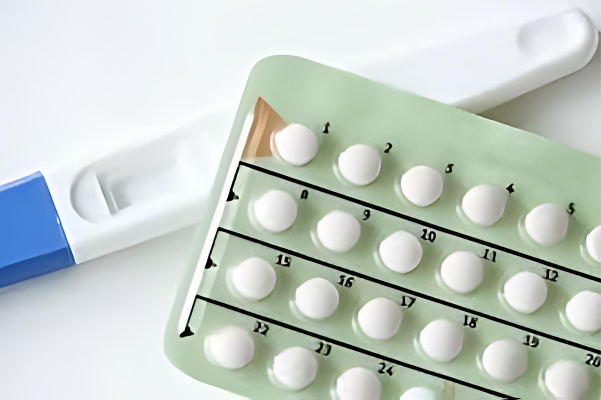
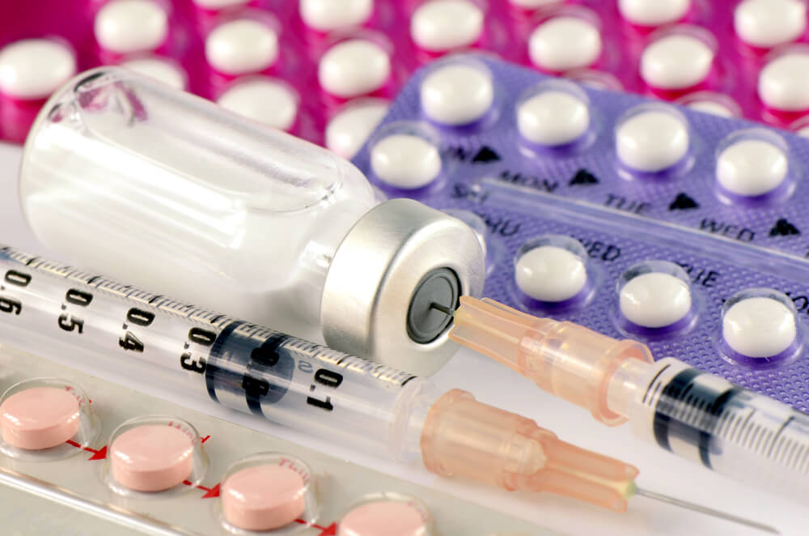

<!DOCTYPE html>
<html lang="pt-br"></html>
<head>
    <meta charset="UTF-8">
    <meta http-equiv="X-UA-Compatible" content="IE=edge">
    <meta name="viewport" content="width=device-width, initial-scale=1.0">
    <link rel="stylesheet" href="style.css">
    <!--box icons-->
    <link href='https://unpkg.com/boxicons@2.1.4/css/boxicons.min.css' rel='stylesheet'>
    <title>Contraceptivos hormonais</title>

</head>
<body>
    <!--Cabeçalho-->
    <header>
        <!--Navegação-->
        <div class="nav container">
        <!--Logo-->
        <a href="index.html" class="logo">Loucos por <span>pontos</span></a>
        <!--Botão de Login-->
        <a href="index.html" class="login">Início</a>
        </div>
    </header>

    <!--Conteúdo do Post-->
    <section class="post-cabecalho">
        <div class="conteudo-cabecalho post-container">
            <!--Voltar Para a Home-->
            <a href="index.html" class="voltar-home">Voltar para Home</a>
            <!--Título-->
            <h1 class="cabecalho-titulo">Contraceptivos hormonais: como funcionam?</h1><!--Falta alterar o título do cabeçalho-->
            <!--Imagem do Post-->
            
        </div>
    </section>

    <!--Posts-->
    <section class="post-conteudo post-container">
        <h2 class="sub-titulo">Tudo sobre métodos hormonais</h2><!--Falta alterar o subtítulo-->
        <!--Falta alterar o texto do post-->
        <p class="post-texto">São métodos à base de formas sintéticas dos hormônios femininos estrogênio e progesterona. Alguns desses métodos combinam os dois hormônios, enquanto outros têm apenas progesterona. </p>
        <p class="post-texto">Nosso corpo produz naturalmente esses hormônios ao longo do nosso ciclo menstrual, são eles que regulam quando ovulamos e quando menstruamos. Desse modo, os métodos hormonais vão introduzir formas sintéticas desses hormônios que vão “enganar” nosso corpo e alterar o funcionamento normal do ciclo menstrual. </p>
        <p class="post-texto">Alguns métodos atuam interrompendo a ovulação, ou seja, a liberação de óvulos pelos ovários, outros apenas dificultam o deslocamento dos espermatozoides por meio de um espessamento do muco cervical e outros tornam a parede do útero mais fina e impedem a implantação de óvulo fecundado.</p>
        <p class="post-texto">Você com certeza conhece a pílula anticoncepcional, mas ela não é a única, existem vários outros métodos de contracepção por meio de hormônios. Eles são divididos em: oral, injetável, transdérmico, anel vaginal, DIU hormonal e implantes subcutâneos. </p>
    </section>

    <!--Compartilhamento-->
    <div class="compartilhar post-container">
        <span class="compartilhar-titulo">Compartilhe esse artigo</span>
        <div class="social">
            <a href="https://www.instagram.com/infoweb_2022/" target=”_blank”><i class='bx bxl-instagram'></i></a>
            <a href="https://www.facebook.com/?locale=pt_BR" target=”_blank”><i class='bx bxl-facebook'></i></a>
        </div>
        <h2 class="sub-titulo">Veja abaixo mais posts sobre esse tema</h2>
    </div>

    <section class="post container">
        <!--Caixa Post 9-->
        <div class="post-caixa hormonal" class="post-img">
            
            <h2 class="categoria">Hormonal</h2>
            <a href="post 9 pilula anticoncepcional.html" class="post-titulo">Pílulas anticoncepcionais</a>
            <p class="post-descricao">São componentes que contêm dois/um hormônio(s) sintético(s), o estrogênio e o progestogênio, semelhantes aos produzidos pelo ovário da mulher. As pílulas combinadas atuam basicamente por meio da inibição da ovulação.</p>
        </div>

        <!--Caixa Post 12-->
        <div class="post-caixa hormonal">
            
            <h2 class="categoria">Hormonal</h2>
            <a href="post 12 injeção anticoncepcional.html" class="post-titulo">Injeção anticoncepcional</a>
            <p class="post-descricao">Existem dois tipos de anticoncepcionais injetáveis, o trimestral que contém apenas progesterona e que deve ser aplicado a cada 3 meses e outro mensal que contém estrogênio e progesterona.</p>
        </div>      

        <!--Caixa Post 14-->
        <div class="post-caixa hormonal">
            
            <h2 class="categoria">Hormonal</h2>
            <a href="post 14 adesivo hormonal.html" class="post-titulo">Adesivo hormonal</a>
            <p class="post-descricao">O adesivo anticoncepcional é um método contraceptivo baseado na administração dos hormônios estrogênio e progesterona através de um adesivo que precisa ser aplicado à pele.</p>
        </div>    
    </section>

    <section class="post container">
        <p>Veja também outros métodos, como: <a href="#">métodos de barreira, </a><a href="#">métodos cirurgico e </a><a href="#">métodos comportamentais.</a></p>
    </section>

    <!--Rodapé-->
    <div class="rodape container">
        <p>Copyright &#169 2024.</p>
        <div class="social">
            <a href="https://www.instagram.com/infoweb_2022/" target=”_blank”><i class='bx bxl-instagram'></i></a>
            <a href="https://www.facebook.com/?locale=pt_BR" target=”_blank”><i class='bx bxl-facebook'></i></a>
        </div>
    </div>

    <!--JQuary Link-->
    <script
  src="https://code.jquery.com/jquery-3.7.1.js"
  integrity="sha256-eKhayi8LEQwp4NKxN+CfCh+3qOVUtJn3QNZ0TciWLP4="
  crossorigin="anonymous"></script>
    <!--Link do JavaScript-->
    <script src="main.js">
    </script>
</body>
</html>